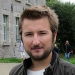

İsmail Arı
Researcher, Teaching Assistant and PhD Student
Department of Computer Engineering, Boğaziçi University
Türkçe sürümü için buraya tıklayınız.
Publications
Journals
- O. Aran, İ. Arı, A. Benoit, P. Campr, A. H. Carrillo, F. X. Fanard, L. Akarun, A. Caplier, and B. Sankur, "SignTutor: An Interactive System for Sign Language Tutoring", IEEE Multimedia, Vol 16, 2009.
- O. Aran, İ. Arı, P. Campr, E. Dikici, M. Hruz, S. Parlak, L. Akarun, and M. Saraçlar, "Speech and Sliding Text Aided Sign Retrieval from Hearing Impaired Sign News Videos", Journal on Multimodal User Interfaces, Springer, 2008.
International Conference and Workshop Proceedings
- İ. Arı, A. T. Cemgil, and L. Akarun, "The Power of Less: Exemplar-based Automatic Transcription of Polyphonic Piano Music," 6th International Workshop on Machine Learning and Music held in Conjunction with the European Conference on Machine Learning and Principles and Practice of Knowledge Discovery in Databases (ECML/PKDD'13), Prag, Czech Republic, 2013.
- İ. Arı, A. T. Cemgil, and L. Akarun, "Probabilistic Interpolative Decomposition," IEEE 22nd Int'l Workshop on Machine Learning for Signal Processing (MLSP), Santander, Spain, 2012. | Presentation
- İ. Arı, U. Şimşekli, A. T. Cemgil, and L. Akarun, "Large Scale Polyphonic Music Transcription Using Randomized Matrix Decompositions," 20th European Signal Processing Conference (EUSIPCO), Bucharest, 2012. | Poster
- B. E. Demiröz, İ. Arı, O. Eroğlu, A. A. Salah, and L. Akarun, "Feature based Tracking on a Multi-Omnidirectional Camera Dataset", International Symposium on Communications, Control and Signal Processing (ISCCSP), Rome, 2012.
- B. E. Demiröz, İ. Arı, A. Ronzhin, A. Çoban, H. Yalçın, A. Karpov, and L. Akarun, "Multimodal Assisted Living Environment", Proceedings of eNTERFACE 2011, The Summer Workshop on Multimodal Interfaces, Pilsen, 2011.
- C. Keskin, İ. Arı, T. Eren, F. Kıraç, L. Rybok, H. Ekenel, R. Stiefelhagen, and L. Akarun, "Vision Based Hand Puppet," Proceedings of eNTERFACE 2010, The Summer Workshop on Multimodal Interfaces, 2010, pp. 10-17.
- İ. Arı, A. Uyar, and L. Akarun, " Facial Feature Tracking and Expression Recognition for Sign Language", International Symposium on Computer and Information Sciences (ISCIS), Istanbul, Turkey, 2008.
- O. Aran, İ. Arı, P. Campr, E. Dikici, M. Hruz, D. Kahramaner, S. Parlak, L. Akarun, and M. Saraçlar, "Speech and Sliding Text Aided Sign Retrieval from Hearing Impaired Sign News Videos", Proceedings of eNTERFACE 2007, The Summer Workshop on Multimodal Interfaces, Istanbul, 2007. [see the journal article version]
- O. Aran, İ. Arı, A. Benoit, A. H. Carrillo, F. Fanard, P. Campr, L. Akarun, A. Caplier, M. Rombaut, and B. Sankur, "SignTutor: An Interactive Sign Language Tutoring Tool", Proceedings of eNTERFACE 2006, The Summer Workshop on Multimodal Interfaces, Dubrovnik, 2006. [see the journal article version]
National Conference Proceedings (in Turkish)
- İ. Arı, A. T. Cemgil, and L. Akarun, "Çok-öbekli Veri için Aradeğerlemeci Ayrışım (ID for Data with Multiple Clusters)," IEEE 21st Signal Processing and Communications Applications Conference, Girne, 2013. | Presentation (HTML, PDF) [IEEE Best Paper Award, Alper Atalay Best Paper Award]
- İ. Arı, U. Şimşekli, A. T. Cemgil, and L. Akarun, "TDA-tabanlı Çoksesli Müzik Notalandırma (SVD-based Polyphonic Music Transcription)," IEEE 20st Signal Processing and Communications Applications Conference, Fethiye, 2012. | Presentation [IEEE Best Paper Candidate]
- İ. Arı, F. O. Alsaran, and L. Akarun, "Görü-tabanlı Gerçek-zamanlı Duygu Tanıma (Vision-based Real-time Emotion Recognition)," IEEE 19th Signal Processing and Communications Applications Conference, Antalya, 2011.
- İ. Arı, Y. Açıköz, "Pinotator ile Hızlı İmge İşaretleme (Fast Image Annotation with Pinotator)," IEEE 19th Signal Processing and Communications Applications Conference, 2011.
- İ. Arı, H. Gao, H. K. Ekenel and L. Akarun, "Yüz Nirengi Noktala-rının Zamansal Öz-benzerliğine ve Kelime Çantasına Dayalı Yüz İfadesi ve Kafa Hareketi Tanıma (Facial Expression and Head Gesture Recognition Using Temporal Self-similarity and Bag of Words of Facial Landmarks)", IEEE 18th Signal Processing and Communications Applications Conference, Diyarbakır, 2010. | Poster
- İ. Arı and L. Akarun, "Yüz Özniteliklerinin Takibi ve İşaret Dili için İfade Tanıma (Facial Feature Tracking and Expression Recognition for Sign Language)," IEEE 17th Signal Processing and Communications Applications Conference, Antalya, 2009.
- O. Aran, İ. Arı, A. Güvensan, H. Haberdar, Z. Kurt, İ. Türkmen, A. Uyar, and L. Akarun, "Türk İşaret Dili Yüz İfadesi ve Baş Hareketi Veritabanı (A Database of Non-Manual Signs in Turkish Sign Language)", IEEE 15th Signal Processing and Communications Applications Conference, Eskişehir, 2007.
MS Thesis
İsmail Arı, "Facial Feature Tracking and Expression Recognition for Sign Language," MS Thesis, Boğaziçi University, Istanbul, Turkey, 2008.
Abstract | Turkish abstract | Turkish presentation
The facial expression analysis research is done using BUHMAP database.
My MS thesis has been published as a book by Lambert Academic Publishing.
Education
- 2008 – 201?
- PhD, Department of Computer Engineering, Boğaziçi University
- 2009 – 2010
- Research visit, CVHCI-Lab, Institute for Anthropomatics, Karlsruhe Institute of Technology
- 2006 – 2008
- MS, Department of Computer Engineering, Boğaziçi University
- 2001 – 2006
- BS, Department of Computer Engineering, Boğaziçi University
- 1999 – 2001
- Bilecik Science High School
- 1998 – 1999
- Kocaeli Körfez Science High School
Workshops & Summerschools
- 2011
- eNTERFACE'11 The SIMILAR NoE Summer Workshop on Multimodal Interfaces, Aug 1-26, Pilsen.
- ENS/INRIA Visual Recognition and Machine Learning Summer School, Jul 25-29, Paris.
- 2010
- eNTERFACE'10 The SIMILAR NoE Summer Workshop on Multimodal Interfaces, Jul 12 - Aug 6, Amsterdam.
- FACETS CodeJam Workshop #3, Oct 7-9, Freiburg.
- 2009
- Advanced Scientific Programming in Python, Aug 31 - Sep 4, Berlin.
- 2007
- eNTERFACE'07 The SIMILAR NoE Summer Workshop on Multimodal Interfaces, Jul 16 - Aug 10, Istanbul.
- 2006
- eNTERFACE'06 The SIMILAR NoE Summer Workshop on Multimodal Interfaces, Jul 17 - Aug 11, Dubrovnik.
Teaching Experience (Assisted Courses at Boğaziçi University)
- 2012
CmpE362Introduction to Signal Processing for Computer EngineersCmpE343Introduction to Probability and Statistics for Computer Engineers- 2011
CmpE300Analysis of Algorithms
CmpE343Introduction to Probability and Statistics for Computer Engineers
Phys494Applied Fourier Analysis- 2010
CmpE300Analysis of Algorithms
CmpE210Introduction to Object Oriented Programming (using C++)- 2009
CmpE260Principles of Programming Languages- 2008
CmpE464Image Processing for Computer Graphics
CmpE160Introduction to Object Oriented Programming (using C++)
CmpE320Principles of Programming Languages- 2007
CmpE320Principles of Programming Languages
CmpE450Software Engineering
Phys494Applied Fourier Analysis- 2006
CmpE450Software Engineering
Phys494Applied Fourier Analysis- 2005
CmpE150Introduction to Computing (using C)
Phys499Data Structures and Algorithms- 2004
Eng110Introduction to Computers
Research Projects (Some research projects involved)
- 2011
- Multimodal Assisted Living Environment
Funded by ESF - 2010
- Vision based Hand Puppet
Funded by UVA - 2009 – 2012
- Gesture Based Human Computer Interaction in Emergency Management Systems (GEMS)
Funded by The Scientific and Technical Research Council of Turkey (TÜBİTAK) - 2006 – 2010
- Sign Language Tutor
Funded by The Scientific and Technical Research Council of Turkey (TÜBİTAK) - 2007
- A Multimodal Framework for the Communication of Disabled
Funded by SIMILAR - 2006
- Sign Language Tutoring Tool
Funded by SIMILAR
Awards & Achievements
- 2013
- SİU 2013 IEEE Best Paper Award, SİU 2013 Alper Atalay Best Paper Award.
- 2009
- DAAD research scholarship for spending a semester in Karlsruhe, Germany.
- 2008
- Rank #1 (with another student) among M.S. graduates of Computer Engineering, Boğaziçi University
- 2008
- Turkey 41st in Selection Examination for Graduate Studies (ALES)
- 2006
- Honor Graduate of Computer Engineering, Boğaziçi University
- 2006
- Mümin Tansever Club Activities Award (given to 2 club members among all 2006 graduates of the university)
- 2005
- Turkey 348th in Selection Examination for Graduate Studies (LES)
- 2001
- Turkey 318th in Turkish University Exam out of more than 1 million students (ÖSS)
Miscellaneous
- Açık Ders
- Video lectures (in Turkish)
lecturer - TİD Sözlüğü
- Turkish Sign Language Dictionary.
developer,designer - Turkish Sign Language Resources Page
- A Visual Dictionary for Turkish Sign Language.
supervisor - BUHMAP Facial Expression and Head Motion Video Database
- Boğaziçi University Head Motion Analysis Project Database.
collector,maintainer - Signiary
- A sign language dictionary in which a user writes a word or phrase and search its sign in the pre-recorded videos.
designer - Face Morphing
- Morphed faces of my professors in BS as a clip.
implementation,designer - Yazılım Kardeşliği
- An invitation page to encourage the Turkish speaking coders to commit to Stackoverflow TR proposal on Area51.
content,maintainer - ismailari.com
- Personal homepage and blog (in Turkish)
blogger - ismailari on web
- twitter · linkedin · stackoverflow